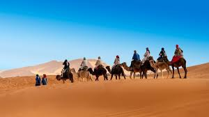

Ghana
Ghana was an empire that made a network of caravan routes, which played a large role in trade.
Mali
Mali was an empire that became wealthy from trade and gained ideas, technology, and religion from traders. Islam spread and expanded politically from it's trade
Salt and Gold
Salt was mined and brought to trading cities, and traded for gold. This was the earliest exchange.
Songhai
Songhai connecte North, West, and East Africa with the Middle East. it controlled trading posts, Jennc, and Timbuktu.
Camels
Camels were used extensively in caravans. Caravanns usually consisted of 1-5,000 camels 1/3 of which carried food and water. Camaels could last 10 days without water.
Trans Saharan Trade caused the spread of Islam, cultural exchange, economic prosperity, political expansion, and civilizational development